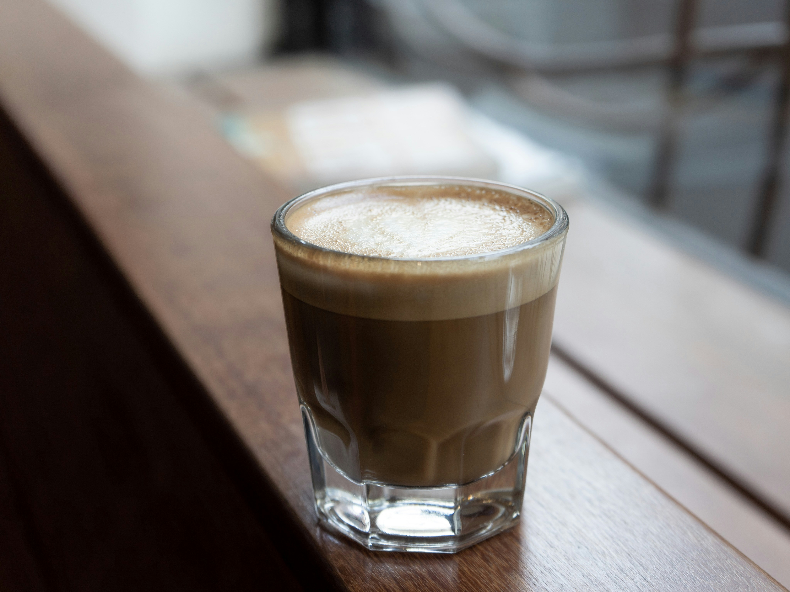

Cortado Recipes

Overview
A cortado is a small coffee drink made with equal parts espresso and steamed milk.
The name comes from the Spanish word "cortar", meaning "to cut",
because the milks "cuts" the intensity of the espresso.
Three Types of Cortados
Tools & Equipment (for all three recipes)
- Espresso machine
- Coffee grinder (optional for accuracy)
- Coffee scale
- Tamper (to pack coffee grounds)
- Milk frothing pitcher
- Milk steamer/frother
- Small glass cup (4-6 oz capacity)
- Spoon (to stir or mixing syrup)